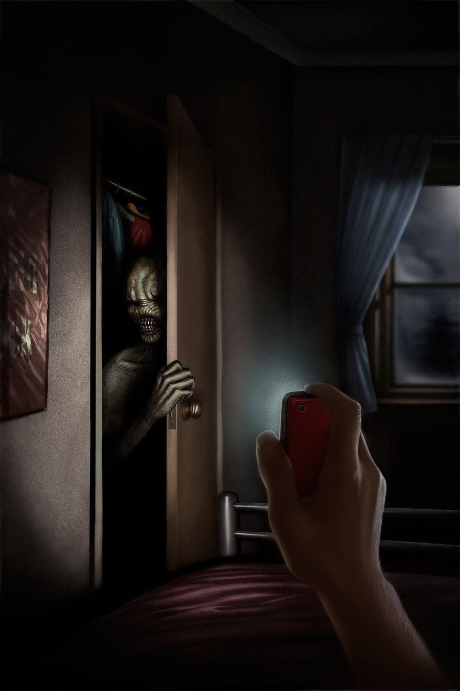

The first thing nine-year-old Bobby associated with that old farmhouse was this weird, musty smell. That was the end of him growing accustomed to the place, at least for a while. His uncle purchased the house because of the price and because of the economic opportunity the surrounding farmland provided. If he had bought it based on looks, one would have to question his taste.
The Kentucky farmhouse was about a hundred years old, and at least three families, one from Romania and two from the states, had lived in it since it had been built. Not even the previous landowner knew much else of the history surrounding the old place, he only held onto the property for as long as he could put the land into tiptop shape in order to turn a profit. The man barely touched the house itself, save for a new paint job on the worn wooden exterior.
Bobby could already picture that dank scent as he and his uncle pulled up to the front of the house. The car was packed to the brim, to the point that Uncle Todd could barely see through the back window.
“And here we are,” said Uncle Todd, in his typical casual tone. For Todd, everything was done out of a certain level of obligation. One could reckon that he took on this attitude when Bobby’s parents passed in a car accident. But his attitude didn’t quite match his actions, as he was anything but a supportive guardian.
All Bobby could think about was the smell of that house and of how just about every floorboard wailed when stepped on.
“Let’s go,” Todd continued, “get your shit.”
Bobby got out of the car and began grabbing bags. Todd would periodically scold him, giving him a mini-lecture on the proper way to carry bags. Bobby second-guessed everything he did, and it was no wonder as to why.
When Bobby entered the house, that musty stink blasted its way into his nostrils. He could swear he saw a mouse scurry across the floor, but he would say nothing of it to Todd, who would likely slap him around a bit for making things up. He could already hear what Todd would say, something like: Complaining about a little mouse, you ingrate?
“Your room’s upstairs,” said Todd, motioning to the staircase. Todd’s room was downstairs, next to the living area.
Bobby started up the stairs. Each one echoed a long and drawn out creak upon each one of Bobby’s steps. Bobby couldn’t stand that noise. He feared hearing those creaking noises while he lay in bed. In fact, he dreaded the thought, for it would surely mean that his Uncle Todd was on his way upstairs. It wouldn’t have been the first time
Bobby spent that evening choking down some canned green beans, awkwardly avoiding eye contact with his uncle. If Todd so much as suspected Bobby of being grossed out by the beans, he’d snatch him up by the back of his neck and make his belt sing.
“How do you like the new place?” Todd asked.
“It’s good,” Bobby quickly replied.
“‘Good’, huh?”
“I like it.”
Bobby crammed more green beans into his mouth so that he wouldn’t have to say anything more. Todd glared at him. It took every ounce of Bobby’s strength to avoid gagging as the cold and slimy beans slithered down the back of his throat, but he managed. One gag and he would be seeing the back of Todd’s hand flying straight toward his face.
“We’re gonna need to be up at three A.M,” said Todd. “We gotta beat the sun, at least that’ll give us a few hours of cool air to work. We gotta get to plantin’ out in the fields, fertilize the soil, all that.”
Bobby nodded obediently.
“I’m gonna show you how to plant the corn and the soybeans,” Todd continued, “In the fall, we’ll harvest ‘em. But first, I gotta show you how to work the trencher.”
Again, Bobby nodded. He feared that anything he said would sound stupid and piss off Todd. Todd looked back at the clock, and followed this by standing up.
“Best get to bed,” he said.
Todd started to walk off, but then stopped and turned around.
“Oh, and I don’t wanna have to wake you up in the morning, got it?”
Bobby nodded.
“How’s that?” Todd asked, rhetorically.
“Yessir,” Bobby quickly replied.
“Set your alarm. Three A.M. If it’s 3:02 and you’re not up, I’m comin’ in there and makin’ my belt sing, you hear?”
“Yessir.”
“And that’ll be no way to work the rest of the day, with a sore rear end.”
“Yessir.”
Todd exited the kitchen. Bobby brought his fork to his plate, but quickly realized that he had eaten the last of his green beans. Todd’s anger was a powerful motivator, indeed.
At around 11 P.M., Bobby awoke with a full bladder. He quickly sat up, counting his lucky stars that he hadn’t wet the bed and drawn Todd’s wrath. However, just as he was about to lift his feet out from under the covers, Bobby froze as he found himself gazing into the dark vacuum of space that was his closet.
His vision was fuzzy from sleep, and so he could see dancing shapes within the darkness of that doorway. For the first few seconds, he could have sworn the shapes he was seeing were really there, but after a moment, even his nine-year-old mind understood they were just the product of sleepy eyeballs.
But then, Bobby began to notice a very distinct shape in the doorway. It was circular in form, very pale in color, and had a slight neon tint. Bobby rubbed his eyes, but the shape still lingered there. He blinked a few times, but still it stayed.
Bobby stared at the shape, and then he began to pick up on other features. The shape had two pitch black dots on its surface. And that was when Bobby realized that it was a face. He couldn’t quite believe what he was seeing, but it was real. He quickly hunkered back down under his covers, pulling the sheet up to the bridge of his nose. He didn’t dare take his eyes off of that face. He feared that if he did, he would look back to see it right in front of him.
A few minutes passed as Bobby continued to stare at the face. He hadn’t pulled the covers away from his own face, and now there was a light rug burn on the tip of his nose because of it. The room was so dark that Bobby could not even see the rest of the being’s body, just the face. As he continued to watch it, the face’s mouth began to slowly move upward in a ghastly grin.
Bobby wanted to get out of bed and run, but there was no way he was mustering up the courage to do that. He had thought about calling for his uncle several times, but that may have brought problems of its own, either from his uncle’s anger, or maybe from the thing in his closet. Still, it was starting to seem like a better option than lying there and having that face stare at him all night long.
“U-Uncle Todd,” Bobby stammered out. It came out as a small squeak that was just barely above a whisper.
“Uncle Todd!” Bobby yelled this time, and then waited. The face’s hideous grin grew wider, as if watching Bobby cry for help gave it some sort of sick satisfaction.
“Uncle Todd!”
Even on the third try, Bobby could still make out the faint sound of Todd’s woodcutter of a snore, downstairs. The rest of the night, Bobby drifted in and out of consciousness as that face stared him down.
“What the hell is this?”
Bobby blinked, and the next thing he knew, it was three A.M., and he was looking up at a very angry Todd, who was furiously tossing Bobby’s piss-soaked sheets across the room. It wasn’t long before Bobby felt Todd’s viselike grip on his wrist. Todd yanked Bobby out of bed and to his feet. Any more force and Todd would have ripped Bobby’s shoulder right out of its socket.
“Not only do you not wake the hell up when I tell you,” yelled Todd, “but then you rub salt in the wound by pissing the bed like an infant!”
“I’m sorry!” Bobby shouted. “There was a…”
Bobby’s voice drifted off. Todd stared him right in the eye, expectantly waiting for an answer, or better yet, an excuse so he could start hitting Bobby.
“There was what?” asked Todd.
“There was something in my closet,” Bobby said, hesitantly.
Todd grimaced at Bobby for a long moment. He followed this by slapping Bobby right to the floor. Bobby lied on the floor, clutching his face as Todd began walking out of the room.
“Now get dressed,” said Todd. “Tonight, you’re gonna wash those sheets. Actually, no, you’re gonna just sleep without sheets.”
Todd stormed out of Bobby’s bedroom, slamming the door behind him. Bobby immediately forgot about the bruise on his face and glanced over at the closet. Thin streams of daylight seeped into the doorway of the closet, and Bobby could see that there was nothing there now but a worn wall and a bar for clothing hangers.
Bobby’s day was mainly spent getting screamed at by Todd. Just about everything Bobby did was followed up by an angry barrage of choice words from his uncle. His previous night of interrupted sleep only made matters worse. At times, Bobby was shocked simply at the pure longevity of his uncle’s anger. How could somebody be angry this much?
That evening, Bobby dreaded that walk up the stairs. The creaking of the steps no longer bothered him too much, and neither did the house’s smell. All he had time to dread at this point was that face in his closet. He had tried to rationalize it with himself, hoping and praying that it had just been one of those half-asleep, half-awake hallucinations. He remembered how his dad used to say that, when he himself was little, he would see tiny little fingers moving around in the carpet upon waking in the middle of the night. Still, no matter how much Bobby tried to rationalize it, that face had just looked too real.
Bobby made sure to drain his bladder before going to sleep. He had to shut the bathroom door, because if you looked closely at the corner of the mirror, you could see one half of that closet. When he left the bathroom, Bobby full-on sprinted over to bed, leaping into the air and diving onto the mattress. He decided to sleep with the light on, tonight. He could have sworn there was no way in hell he’d fall asleep, especially since he shivered as he lied there freezing without a blanket. But deprivation set in, and soon, Bobby was lights out.
Upon waking that morning, Bobby was thankful that he hadn’t woken in the middle of the night. Granted, Uncle Todd’s ascending footfalls were not the most reassuring thing to wake up to in the morning, but anything was better than that ghastly face.
As he listened to Todd coming up the stairs, Bobby felt a very strong itch on his forearm. As he scratched away at it, the itch began to grow in intensity, and soon, it began to burn. Bobby glanced over at his arm, and immediately was filled with unease. On his arm was a thin marking, clearly a bite mark, that much was apparent, even to nine-year-old Bobby. There were two distinct markings that were a part of a larger bite. The two marks looked like they had already begun to heal, which was strange.
Bobby’s examination of his odd little bite mark was interrupted by Todd’s hasty entrance into his room. Todd knocked on Bobby’s already open door, snapping him out of his thoughts.
“Let’s get,” said Todd.
Bobby planted corn and soybeans as far away from his uncle as possible. He constantly checked over his shoulder, hoping that senile old man would keep his distance. Every few minutes, after checking to make sure Todd wasn’t watching him, Bobby would examine the bite mark on his arm. Oddly enough, it burned and itched even more in the sunlight. The bite was not from any sort of insect, Bobby knew this much. It looked like it had been left from a human mouth.
A short time later, Bobby realized that his bite mark was not the only thing that was itching and burning. No, his entire arm felt like it had received the worst sunburn ever known, and yet there was no indication of a burn upon it. The skin on his arm was tan and unburnt, not a tinge of red.
Bobby did his best to ignore the burning sensation. Any one complaint would have Todd kicking his ass up and down the field. At eight o’clock in the morning, ignoring the pain was tough, but doable. Every time Todd would walk off to take a piss or to grab another piece of equipment, Bobby would take it as an opportunity to rest in the shade. Upon doing so, the burning sensation in his arm would cool off a bit.
But as the sun rose higher and higher in the sky, so the shaded areas became more and more sparse. Soon, Bobby found himself taking refuge in the only shaded spot he could find, a little patch of shadow from the woodshed, which was in direct view of just about anywhere on the farm.
“Hey!”
Bobby nearly had a heart attack as he heard Todd’s voice echo across the fields. He looked over his shoulder to see Todd standing about a hundred yards away, one hand on his hip and the other on his forehead to shield his eyes from the sun. He was looking right at Bobby, who was hanging out in the shade, scratching away at the bite mark on his arm.
“The hell you doing, boy?” Todd continued. Bobby struggled to think of an answer.
“I have a bite on my arm,” Bobby replied.
“You’re about to have a welt on your arm if you don’t get back to it. A little bug bite’s stoppin’ you from workin’?”
Bobby reluctantly stepped back out into the sunlight and continued planting seeds. Uncle Todd was onto him, now. He’d be keeping a close eye on Bobby the rest of the day, Bobby was quite sure of that.
As the sun rose nearer to its midday position, the burning sensation in Bobby’s arm began spreading toward the rest of his body. His skin was on fire, now. It was just about unbearable. It was as if he had been sunburned from head to toe, but again, there was not a patch of redness on him. Still, the pain was excruciating, and Bobby wasn’t sure how much longer he could bear it. There weren’t many things that scared him more than Todd’s belt blows, but this pain within his skin was as frightening as it was inexplicable.
While the pain atop Bobby’s skin grew more and more intense, the bite mark began to ooze and fester, sort of like poison ivy. Bobby had gotten poison ivy before, but the discomfort that arose from the bite mark was on another level. It itched and burned, and the more he itched it, the more it burned, and the more it burned, the worse the itch. It was a lose-lose situation, especially with Uncle Todd expecting another few hours of work from Bobby.
It was about half past ten o’clock when Bobby knew he couldn’t go on like this. Some part of him knew that the itching and burning would lessen if he got out of the sun. It was strange and it didn’t make sense, but Bobby had realized it through a morning of trial and error. He figured that his uncle—who was now somewhere deep in the cornfield—was a problem best dealt with later. For now, the pain was just too much. Bobby would have killed someone just to cease it.
He dropped everything and broke into a run for the house. Even the fabric of his shirt brushing against his skin burned like hell. It was the longest jog of his entire life, even though the farmhouse was only a few hundred yards away.
Bobby burst inside the house, taking care to close the door quietly so Todd wouldn’t hear it. He panted like crazy, wincing from the pain. But just as he had suspected, it quickly began fading away the moment he was back inside. In just thirty seconds, the burning sensation was completely gone, and it was as if it had never been there in the first place. Bobby stared down at his arms with pure confusion. He pressed two fingers to one and pulled them away, the standard visual test for a sunburn. There wasn't one.
Bobby continued to glance out the window in paranoid fashion. After just a few minutes, his heart sank as he saw Todd angrily pacing the farm, searching for him. Bobby began shifting around, trying to think of what to do next. If he stayed inside, Todd was bound to come looking for him. But he simply couldn’t deal with that burning pain, not again. He had to think of something, and fast, because Todd was now on his way toward the house.
Bobby ran into the kitchen, grabbed a glass, and poured tap water into it. As he began sipping from the glass, he heard the front door open.
“Bobby?” Todd shouted in a so help me if you’re in here manner.
Bobby hesitated as he continued to gulp down water. He pulled the glass away from his lips, making sure his voice reflected that he had just finished drinking water.
“In here,” he said, “getting water.”
The sound of Todd’s approaching footsteps followed. He entered the kitchen and stared Bobby down.
“Why don’t we get you a jug?” said Todd. “Here, let’s get you a jug. I don’t need you passin’ out on me.”
Great, thought Bobby as he watched Todd sift through various items in the pantry. He couldn’t go back outside, he just couldn’t do it.
“Uncle Todd,” said Bobby.
“What?” Todd immediately replied.
“My…my skin’s hurtin’ me.”
“Pardon?” Todd stopped what he was doing and aimed one ear at Bobby.
“My skin’s burning,” said Bobby.
“Where?”
“Everywhere.”
“Did you get poison ivy?”
“I don’t know. It only hurts when I’m in the sun.”
Todd backed out of the pantry and approached Bobby, kneeling down on the ground and scrutinizing him.
“That don’t make sense,” said Todd.
“It burns so bad,” said Bobby, “I can’t take it.”
Todd huffed in irritation, staring down at the ground as he thought of what to do.
“Well…” said Todd as the wheels inside his head turned. “I guess if you ain’t gonna work then you ain’t gettin’ supper. Right?”
“I guess,” Bobby timidly replied.
“Get upstairs. I don’t wanna see you ‘till tomorrow mornin’. And you better not scratch, it’ll make it worse.”
“Yessir.”
Todd stormed out of the house, and now Bobby was confronted with the idea of once again going upstairs by himself. That bedroom of his had a presence that was beyond ominous. But now, Bobby was beginning to realize that the sunlight pouring in through the kitchen window was causing his skin’s burn to slowly return. And with that, Bobby began booking it toward the stairs.
When he entered his bedroom, the first thing he did was shut the blinds on his window. Bobby flipped on the light, keeping a watchful eye on the closet, which looked like a gaping mouth that was ready to devour him.
He plopped down on his bed. At the foot was a pile of now-clean sheets that thankfully no longer smelled of piss. The burning of his skin faded away once again.
Bobby’s thoughts were interrupted by the sound of footsteps coming up the stairs. The sounds thoroughly startled him since he hadn’t heard anyone enter the house. He was sure he had watched his uncle walk outside, so why hadn’t he heard him come back in?
Bobby braced himself as the footsteps grew nearer. He hunkered down in his bed, rolling over on his side with his back to the door, shutting his eyes and pretending to be asleep. The footsteps halted for a moment or two. Bobby tuned his ears, the sudden silence deafening.
What he heard next could best be described as several fingertips making contact with his wooden door, pushing it slightly open. This was followed by more silence, which greatly unsettled Bobby. Curiosity got the best of him, and he rolled over to see just who was at the door. What he saw next made his heart jump to his throat.
Two pitch black eyeballs peered at him through the doorway. They were attached to that pasty white face he had seen in his closet two nights ago. Bobby was frozen with fear for several moments. The black eyes did not even blink, and their owner was completely unmoving.
Snapping out of his fearful trance, Bobby leapt up and dove for cover on the side of his bed. He propped his back up against the side of the mattress, panting like a winded animal. His wide eyes darted all over the place as he listened for more sounds. There was silence once again.
Bobby slowly worked up the nerve to peek over the mattress. When he did, there were those eyes, still in the same place, staring back at him from the bedroom doorway. Bobby squeaked with fear and hunkered back down behind the bed.
A few moments passed, and Bobby heard the sound of his door creaking as that closet creature pushed it open. What followed were its footsteps. Bobby could hear it as it walked across the wooden floor, and he began to pray that it was not on its way to the side of the bed, where Bobby was hiding. Though, hiding was not quite an accurate description, that thing knew he was there.
His forehead beaded with perspiration as the steady rhythm of the creature’s footfalls continued. He could see its shadow stretching across the wall next to him. The shadow was humanoid in shape, albeit still ghastly in form.
“Please, God,” Bobby murmured under his breath, “I love you, God, with all my might. Keep me safe a-all through the n-night. I love you, God, with all my might. Keep me safe all through the night…”
With his eyes closed tightly, Bobby repeated this prayer over and over again, until the words exited his mouth so fast that they sounded like they were all one long, made-up word.
He wasn’t sure how many times he had repeated the phrase or how many minutes had passed, but he soon opened one eye and glanced to the side to see that the shadow was no longer there. It was going to take many more minutes before he had the nerve to peak around the corner of the mattress, or to even move a muscle.
Minutes passed, and Bobby slowly crawled over to the foot of the bed, cautiously peering around the corner of the mattress. The figure was not there. All that was left was that same gaping closet doorway, which Bobby was sure the creature had gone into.
He felt cornered. If he went outside, he’d surely be in pain again. If he stayed inside, there was a chance he’d see that creature again. So, Bobby did what any other child would have done. He crawled under the bed and hid there.
Bobby opened his eyes to darkness. He could feel a stream of drool drizzling from the corner of his mouth and into a little puddle on the hardwood floor he had been sleeping on for who knew how long. It was nighttime, now, and Bobby was still hunkered down under his bed, the wooden panels beneath his mattress sandwiching him between the bed and the wood floor. He was unaware of the time, but his heart soon sank as he heard footsteps coming up the stairs. At first, he didn’t know which it was—his uncle, or the creature—but he soon had his answer when he heard the distinct and disgusting sound of his uncle clearing his throat.
Bobby quickly crawled out from under his bed and plopped down on the mattress, rolling over and pretending to be asleep. His bedroom door creaked a bit as Todd pushed it open.
“Psst,” Todd whispered, “you asleep?”
Bobby did not answer, and in this moment, he became terrified as he hoped to God that Todd wasn’t up here for a reason other than simply checking on him. The next thing he heard was the sound of Todd slowly pacing into his room. Oh, God. Bobby braced himself for the worst. He could hear Todd circling around the foot of the bed.
But a slight relief set in when Bobby heard the sound of Todd fiddling with the clock on the night stand. Through squinted eyes, Bobby confirmed that this was what Todd was doing, just checking to make sure the alarm had been set. Bobby knew he had forgotten to set it, judging by the curses Todd muttered under his breath.
Soon, Bobby could hear Todd circling back around the other side of the bed. All right, now just leave, Bobby silently prayed. Just leave and go to sleep. The footsteps suddenly ceased, and Bobby silently panicked when he did not hear Todd walking down the stairs. He was sure of what was going on, now…Todd was watching him sleep.
Should I fake snore? But then, Bobby feared that it might actually sound fake. He wasn’t even quite sure if he snored while he slept. He knew Todd did, and that was the only comforting sound that Todd had ever made, a sound that signaled he was asleep and therefore unable to slap Bobby around.
Bobby thanked the heavens when the sound of Todd’s footsteps started back up, and then he further thanked the heavens when those footsteps were echoing off of the stairs and causing that loud squeaking sound. Never had the creaking of stairs been so comforting to Bobby.
When he was sure that Uncle Todd was gone, he rolled over and was about to hop out of bed to crawl back under it, the only place he felt safe. But once he rolled over, he found himself not looking up at the ceiling, but into those all-too-familiar pitch black eyes of the creature in the closet.
Before he even had time to scream, Bobby’s entire body went into a state of paralysis, and the only sound he could utter was a weak little wheezing noise from the back of his throat. All he could do was lie there and stare up into those beady, taxidermy-type eyes. They stared angrily down at him, and his own eyes were magnetized to them. And then, as if inhaling laughing gas, Bobby fell unconscious.
Bobby’s three A.M. alarm woke him that morning. It took a few seconds, but Bobby soon had no trouble recalling what had happened the previous evening. He wasn’t sure how much longer he could stay in this house. He didn’t even want to reach over and shut off the alarm. That bed was now the only safe haven for him, and even being atop the bed was not ideal.
The second Bobby lifted his head, he felt a sharp pain coming from his neck, an excruciating soreness within the tendons of his jugular. He brought his fingertips to the area, but immediately winced upon touching it. He already knew what it was, and it would be hackneyed at this point for him to wonder what it might be.
Bobby rushed to the bathroom and looked in the mirror. There on his neck was a massive bite mark, much like a hickey, except for several clear puncture marks that had been made by teeth. It looked mysteriously healed, just like the other one, but Bobby didn’t want to know what this one would feel like upon stepping out into the sun. He could only imagine all of the horrendous ways it would burn, crack, ooze, and fester.
“Come on boy, let’s get!”, shouted Todd from the bottom of the stairs.
The sun would rise before 7 A.M., so Bobby had three hours, more or less, before he simply had to go inside. He already knew what would take place if he stayed in the sun. It was the same sort of bite as the one on his arm, and it would produce the same effect, of that he was certain.
Breakfast that morning was most unsatisfying for Bobby, specifically because he found that he did not want to eat. He was hungry, but had no desire for the food on the table. He couldn’t even force it down this time, it was as if every fiber of his being was rejecting the eggs and toast he had eaten all his life. He craved something else, but he didn’t know what. It drew Todd’s wrath, but nonetheless, Bobby simply could not eat it.
Bobby kept the most watchful of eyes on the horizon while he worked. At the first solitary ray of sunlight that he saw peeking up over the skyline, Bobby was getting out of Dodge. The bite hurt bad enough as it was.
Sure enough, as half-past six rolled around, two tiny rays of sunshine peeped up over the horizon and shot straight for the bite on Bobby’s neck. Almost immediately, the bite mark began to peel and seep with pus. His skin began to feel sunburned again, and he immediately dropped everything and began walking toward the house. He didn’t even check to make sure Todd wasn’t looking, and evidently Todd was looking, for he soon yelled across the field at Bobby.
“The hell you doin’, boy?”
“Going inside,” Bobby said without even turning around.
“Boy…”
Bobby heard the sound of Todd dropping the rake he was holding.
“I’m kickin’ your ass.”
As Bobby began booking it for the house, he could hear a sickly crazed chuckle emanating from Todd’s mouth.
“Oh, man,” Todd snickered, “I’ll tell ya what, boy, you’re done!”
Bobby quickened his pace, running up the doorsteps and bursting into the house. The burning feeling immediately calmed down. He looked through the window and saw Todd eagerly making his way toward the doorsteps. Bobby locked the door. The mere clicking sound of the lock seemed to anger Todd, who broke into a full fledged sprint up the doorsteps and then began banging on the door like a caged animal.
“Open this goddamn door!” Todd barked. Bobby shook his head, which made Todd angrier.
In a split second, Todd froze and contemplated his next move, and then, in one additional second, he ran down the doorsteps and rounded the corner of the house. Bobby began sprinting for the backdoor. He had to lock it before that bastard got in. If Todd got inside, it was over.
Bobby ran and ran, but the sound of the backdoor opening was enough to send him running back the way he came.
“You’re done, boy!”
Bobby booked it for the stairs. He thought of going out the front door, but he just couldn’t face the sunlight, not again. He ran up the stairs. About halfway up, he looked over his shoulder to see Todd begin his own ascent upstairs.
“Where you going?”, Todd asked maniacally. “Where you gonna go, huh?”
Bobby burst into his room and slammed the door shut, locking it just in time. The doorknob began wiggling wildly as Todd tried to open it.
“Open this door, now! Open it!”
“Go away!” Bobby shouted.
“Boy…I’ma kick it down!”
There was silence for a moment as Todd seemed to be giving Bobby some sort of choice to open the door. But at the heart of it, there really was no choice. Bobby was gonna have to face the music.
“All-righty, ya little shit!” And with that, Todd knocked in the flimsy wooden door with one mule-like kick. He immediately lunged toward Bobby. Bobby hopped up onto the bed and over to the other side. It was now a game of cat and mouse. Todd circled around the foot of the bed, and when he did, Bobby jumped up onto the bed and went to the other side. This repeated several times, but it couldn’t last forever, Bobby knew that much.
“I can do this all day!” Todd exclaimed.
Bobby was now on the far side of the room, and he started eyeballing the doorway. Todd was by the corner of his bed, at the foot. The second Todd took one step around that corner, Bobby was gonna leap for that door. Todd did a little fake lunge, and Bobby almost leapt onto the bed, catching himself at the last minute. Todd did a few more fake lunges, and then stood very still, waiting to see what Bobby would do. Bobby stayed patient, however, and soon, Todd rounded the corner and ran for Bobby.
Bobby jumped up onto the bed and bounded across the mattress, landing on the wooden floor. But Todd was fast, and he quickly reversed back to the other side of the bed, catching Bobby’s shirt.
“Gotcha!”
Todd yanked Bobby onto the bed. Bobby let out a horrible choking noise as his shirt collar tightened around his neck. Next thing he knew, he was thrown down onto the mattress. He tried to wriggle away, but Todd was too strong. Todd firmly grasped Bobby’s ankles and began tugging at his pant legs.
“Best don’t kick, boy,” said Todd.
Bobby’s eyes widened as Todd began yanking hard at Bobby’s pant legs. He knew what happened next. It had happened twice before.
“No, stop!” Bobby begged. But Todd kept at it.
Suddenly, however, Bobby’s fear quickly ran dry. He was now seeing red, both in the traditional sense of being angry, but also in a literal sense, as well; a dark, syrupy red. And the next thing he heard, right before blacking out, was the sound of Todd screaming in pain.
When Bobby came to, he found himself standing in his bedroom, completely alone. It was almost dark outside, now, the sun nearly finished dipping below the horizon. Bobby didn’t know what had happened or why he was here by himself, but he felt not a single trace of fear, and so he began descending the stairs.
Bobby entered the kitchen, and the first thing he saw was Todd, lying on the table with his throat torn wide open and his voice box hanging out. His skin was jet white, and not a single drop of blood was on the floor below. And as Bobby smacked his lips and moved his tongue around in his mouth, he tasted the strong flavor of blood. Both the tang of the blood and the sight of Todd’s corpse made Bobby grin.
Feeling a presence behind him, Bobby turned around to see the creature from his closet, looming over him with its pasty white face, razor-like fangs, and black cloak. But this time, its presence didn’t frighten Bobby in the very least. In fact, nothing frightened him now. And as he took the creature’s clawed hand and began walking with it into the darkness, he felt safe and sound, for he would never have to step out into the sunlight, again.